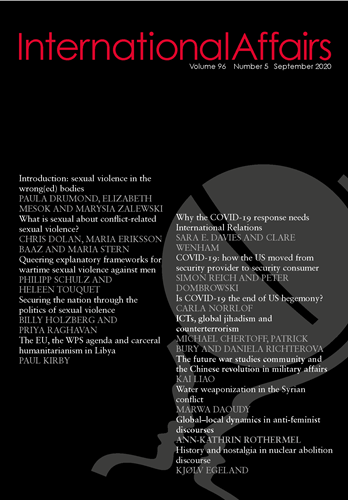

收录于合集 #新刊速递 123个

期刊简介

《国际事务》是国际关系领域的一流学术期刊，也是多学科综合性学术期刊。本刊于1992年由伦敦皇家国际事务研究所查塔姆学院(Chatham House)创立，内容来源广泛，力图囊括业内专家、学术新秀对重点、热点问题的最新思考。2019年期刊影响因子为3.705，在95个国际关系类刊物中位列第4名。
本期编委
【编译】 石雨宸 吕紫烟 伍雨荷 杨沛鑫 阮辰阳 黄慧彬 李思
【审校】 李博轩 王国欣 姚寰宇

本期目录
1. 为什么新冠肺炎的应对需要国际关系 Why the COVID-19 response needs International Relations 2. 新冠疫情终结美国霸权？公害、领导失败和货币霸权Is COVID-19 the end of US hegemony? Public bads, leadership failures and monetary hegemony 3. 数字化浪潮：信息技术、全球宗教恐怖主义与反恐活动Bytes not waves: information communication technologies, global jihadism and counterterrorism 4. 未来战争学术共同体与中国军事改革The future war studies community andthe Chinese revolution in military affairs 5. 叙利亚冲突的水武器化：控制与合作策略Water weaponization in the Syrianconflict: strategies of domination and cooperation 6. 反女权主义话语中的全球- 地区动态:印度、俄罗斯和美国网络社区分析Global–local dynamics in anti-feminist discourses: an analysis of Indian, Russian and US online communities 7. 谁偷走了裁军？核废弃论中的历史与怀旧Who stole disarmament? History andnostalgia in nuclear abolition discourse
01
为什么新冠肺炎的应对需要国际关系
【题目】 Why the COVID-19 response needs International Relations
【作者】 Sara E Davies，澳大利亚研究委员会（ARC）未来研究员(Future Fellowship)，澳大利亚格里菲斯大学政府与国际关系学院治理与公共政策中心教授；Clare Wenham，伦敦政治经济学院卫生政策系全球卫生政策助理教授。
【摘要】 COVID-19大流行影响了所有国家，但政府的应对方式取决于政治如何运作。在这种情况下，世界卫生组织（WHO）试图协调向各国提供的建议并持续管控疫情。考虑到COVID-19的政治动因，我们认为这是推进国际关系知识的重要时刻，作为纳入世卫组织流行病控制知识输入库的一种必要和独特的方法。历史上曾经主张技术专长胜于政治的努力是多余和过时的：世卫组织一直被成员国政治化。我们建议世卫组织接受政治，参与外交政策和外交专门知识。我们提出了国际关系方法可以为公共卫生决策和技术政策协调提供信息的实例以作为切入点。撰写这篇文章是为了让世卫组织、多边组织、捐助筹资部门、各国政府和国际非政府组织中应对新冠肺炎的工作人员接受政治分析，而不是回避它。彼此协调的政治合作对战胜新冠肺炎至关重要。
The COVID-19 pandemic affects all countries, but how governments respond is dictated by politics. Amid this, the World Health Organization (WHO) has tried to coordinate advice to states and offer ongoing management of the outbreak. Given the political drivers of COVID-19, we argue this is an important moment to advance International Relations knowledge as a necessary and distinctive method for inclusion in the WHO repertoire of knowledge inputs for epidemic control. Historical efforts to assert technical expertise over politics is redundant and outdated: the WHO has always been politicized by member states. We suggest WHO needs to embrace the politics and engage foreign policy and diplomatic expertise. We suggest practical examples of the entry points where International Relations methods can inform public health decision-making and technical policy coordination. We write this as a primer for those working in response to COVID-19 in WHO, multilateral organizations, donor financing departments, governments and international non-governmental organizations, to embrace political analysis rather than shy away from it. Coordinated political cooperation is vital to overcome COVID-19.
【编译】 石雨宸
【审校】 李博轩
02
新冠疫情终结美国霸权？公害、领导失败和货币霸权
【题目】 Is COVID-19 the end of US hegemony? Public bads, leadership failures and monetary hegemony
【作者】 Carla Norrlöf，芬兰国际事务研究所客座研究教授，多伦多大学政治学副教授，梅西学院高级研究员，国际问题研究所研究员。研究方向是国际合作理论，特别关注大国，尤其是美国在货币、贸易和安全领域的霸权。
【摘要】 新冠肺炎是战后最大的侵袭性全球危机，危及人类活动的各个方面。通过将新冠肺炎疫情定义为公害（public bad），作者阐述了在20世纪和21世纪，关于美国与自由国际秩序（LIO）关系的其中一个重大议题。作者将新冠病毒概念化为公害，并分析了它对美国霸权的影响。与其他国际公害和许多构成自由国际秩序的重要公共产品不同，新冠疫情不仅会带来某种程度的竞争，而且具有部分排他性，从而将其更多地转变为俱乐部产品。在国内层面，作者分析了未能有效控制新冠疫情公害如何损害了美国保障公民健康和国内经济的能力，而这正是美国发挥国际领导力的基础。这些失败影响了美国向全球提供其他公共产品。在国际层面，作者阐明了美国是如何在放弃世界卫生组织（WHO）的同时，将这场危机用作战略武器，来加强其反对自由国际运动的坚定立场。虽然美国仅仅在货币这一单一领域发挥了领导作用，但作者认为，这一举措对维持美国霸权地位的影响更大。然而，如果美国继续对新冠疫情管理不当，它的货币霸权甚至也有可能受到威胁。
COVID-19 is the most invasive global crisis in the postwar era, jeopardizing all dimensions of human activity. By theorizing COVID-19 as a public bad, I shed light on one of the great debates of the twentieth and twenty-first centuries regarding the relationship between the United States and liberal international order (LIO). Conceptualizing the pandemic as a public bad, I analyze its consequences for US hegemony. Unlike other international public bads and many of the most important public goods that make up the LIO, the COVID-19 public bad not only has some degree of rivalry but can be made partially excludable, transforming it into more of a club good. Domestically, I demonstrate how the failure to effectively manage the COVID-19 public bad has compromised America’s ability to secure the health of its citizens and the domestic economy, the very foundations for its international leadership. These failures jeopardize US provision of other global public goods. Internationally, I show how the US has already used the crisis strategically to reinforce its opposition to free international movement while abandoning the primary international institution tasked with fighting the public bad, the World Health Organization (WHO). While the only area where the United States has exercised leadership is in the monetary sphere, I argue this feat is more consequential for maintaining hegemony. However, even monetary hegemony could be at risk if the pandemic continues to be mismanaged.
【编译】 吕紫烟
【审校】 姚寰宇
03
数字化浪潮：信息技术、全球宗教恐怖主义与反恐活动
【题目】 Bytes not waves: information communication technologies, global jihadism and counterterrorism
【作者】 Patrick Bury，英国巴斯大学高级讲师；Daniela Richterova，英国布鲁内尔大学社科学院讲师；Michael Chertoff，美国前国土安全部部长。
【摘要】 戴维·拉波波特提出的四波全球性宗教恐怖主义浪潮理论时至当下仍具有重大的影响力。然而，包括这一理论在内，既有恐怖主义类型研究常常忽略了信息技术（ICTs）在全球宗教恐怖运动演变中所起到的作用。本文聚焦于业已实行的恐怖主义袭击，立足于信息技术发展理解宗教恐怖运动的演变，实现了两点理论上的创新。本文的核心论点是：20世纪90年代以来，在信息技术的影响下，宗教恐怖运动在战略、组织和行动策略上都发生了巨大的转变，可以根据这些转变将宗教恐怖主义划分为四个互有重叠的阶段。第一代宗教恐怖主义出现在世纪之交，这一时期宗教恐怖组织的特征为自上而下领导的阶层制度、海外注资及海外受训，以及具有符号意味的恐怖袭击。此后，第一代宗教恐怖主义逐渐演变为第二代以及第三代宗教恐怖主义。第二代宗教恐怖主义的主要特征为一系列具有全球性影响力的规模小、相互协调的恐怖袭击。第三代宗教恐怖主义则表现为利用个人的粗略谋划实现的、独立于核心恐怖组织的恐怖活动。如今，宗教恐怖主义已经演变到第四代，即“网络恐怖主义”。本文认为，这种分类方法能够针对信息技术对全球宗教恐怖主义的动力机制提供有效的概念基础，从而助力研究和实践工作；这一动力机制亦能为其他国际性恐怖主义运动提供参考借鉴。本文在结论中分析了反恐机制应当如何应对这些变迁，并为后续研究指明了可能的论域。
Rapoport’s conceptualization of the last, religious wave of four global waves remains highly influential. But it, and other typologies, have placed too little emphasis on the influence of information and communication technologies (ICTs) on the evolution of global jihadist activities. This article makes two new contributions by developing both a new ICT-based typology for understanding jihadist evolutions, and by focusing on successful attacks. Our central argument is that ICTs’ impact on global jihadism has facilitated dramatic transformations of its strategy, organization and tactics since the 1990s, and that these can be understood as four overlapping iterations. ‘Jihadism 1.0’ describes the hierarchical, top-down directed and overseas financed and trained terrorist organizations that conducted iconic attacks at the turn of the millennium. Jihadism has since evolved into ‘Jihadism 2.0’ and then ‘Jihadism 3.0’. Jihadism 2.0 recognizes that a number of smaller, coordinated attacks can have a global impact. Jihadism 3.0 is inspired terrorism that has no links to the central terror organization, utilizing individuals and crude tactics. Finally, jihadism is evolving toward ‘Jihadism 4.0’, or cyberterrorism. We argue this typology provides a useful basis for scholars and practitioners to conceptualize the ICT dynamics influencing global jihadism, and these may be applicable to other global terrorists. The conclusion analyses how counter-terrorism services can respond to these evolutions and charts areas for future research.
【编译】 伍雨荷
【审校】 姚寰宇
04
未来战争学术共同体与中国军事改革
【题目】 The future war studies community and the Chinese revolution in military affairs
【作者】 廖凯，山东大学政治学与公共管理学院副教授。
【摘要】 本文追溯了中国军事改革有关的思想与概念的起源与演化，将《解放军报》的“军事学习”专栏和“军事论坛”作为未来战争学术共同体的核心，而自20世纪80年代初以来，其是一支主张对军事研究和国防规划采取前瞻性研究的重要力量。通过回顾该团体的研究和活动，本文认为这个团体处于解放军研究国外军事理论和思想并将其中国化的前沿。具体来看，在二十世纪八十年代早期，他们促成了对国际安全环境的重新评估，并塑造了中国领导人的威胁认知，，并最终引导中国人民解放军的战略思想从为全面战争备战转向了和平时期的军队建设。在八十年代末，他们提出了解放军未来战争研究的倡议，将局部战争和高科技战争的概念引入解放军。作为主要的智库，他们为解放军1993年提出的“打赢高技术条件下的局部战争”思想奠定了理论基础，并为中国军事改革铺平了道路。
This article traces the origins and evolution of the ideas and concepts associated with the Chinese revolution in military affairs (RMA). It identifies the PLA Daily’s ‘Study Military’ column and ‘Military Salon’ as core elements of a future war studies community that has been a major force advocating a forward-looking approach to military studies and defence planning since the early 1980s. It examines their studies and activities, and argues that this community was at the forefront of studying foreign military theories and ideas and introduced RMA-related concepts to China and adapted them to the Chinese context. More specifically, in the early 1980s, they contributed to the reassessing of the international security environment and shaped the Chinese leadership’s threat perception, which eventually led to the shift of the People’s Liberation Army’s (PLA) strategic thought from preparing for imminent all-out war to peacetime army-building. In the late 1980s, they proposed major PLA-wide future war studies initiatives, which resulted in introducing the concepts of local war and high-tech wars into the PLA. They were a major intellectual force that laid the theoretical foundation for the PLA’s doctrine of ‘local war under high-tech conditions’, announced in 1993, which paved the way to the RMA with Chinese characteristics.
【编译】 杨沛鑫
【审校】 李博轩
05
叙利亚冲突的水武器化：控制与合作策略
【题目】 Water weaponization in the Syrian conflict: strategies of domination and cooperation
【作者】 Marwa Daoudy（乔治敦大学）
【摘要】 行为体在国内冲突中如何将水武器化？现有的水武器化（water weaponization）类型在国家与非国家行为体间具有决定性差异，并提及例如恐怖主义这样模糊的标签。此外，这些类型既忽视了参与暴力冲突的不同行为体也会在水方面以特定方式合作，也忽略了在战争之外的情境下水武器化的可能性。本文以叙利亚为案例，利用泄露的“伊斯兰国文件”以及第一手资料和采访，提出水武器化的一种新的分类方式。首先，本文记述叙利亚的阿拉伯复兴社会党政权如何在内战前以水作为武器来控制国内的库尔德人并获得合法性，而水武器中的基础设施又是如何在战时提升了伊斯兰国控制叙利亚东北部的能力。其次，本文探究诸如伊斯兰国与库尔德民主联盟等非国家武装组织是如何通过对具有重大战术意义的水系统进行瞄准和利用从而采取与叙利亚政府类似的水武器化战略的。最后，本文向我们说明诸如伊斯兰国与阿萨德政权等敌对势力是如何将合作性水协定武器化以互相促进利益，即便此举会使平民遭受暴力影响。由上所述，本文将水武器化战略分为四类：控制与合法性、军事工具、军事目标以及合作。这样一种新的分类方式有三点好处。第一，可以解释在冲突之外的国家- 社会关系中水如何被武器化；第二，可以完善现有的将水视为军事工具和目标的定义；第三，可以评估水合作的类似于武器的效果。
How do actors weaponize water in intrastate conflicts? Existing typologies of water weaponization make deterministic differentiations between state and non- state actors and invoke opaque labels like ‘terrorism’. Furthermore, these typologies ignore how various actors engaged in violent conflict also cooperate over water, and whether water weaponization occurs beyond war. I propose a new typology for water weaponization in an analysis of the case of Syria, drawing on the leaked ‘ISIS papers’ as well as primary sources and interviews. The study begins by charting how the Ba’athist regime used water as a weapon of domination and legitimacy against its Kurdish population with infrastructure that would later facilitate the Islamic State of Iraq and Syria’s (ISIS) ability to take hold of northeast Syria. I then turn to how non-state armed groups like ISIS and the Kurdish Democratic Union Party (PYD) have adopted strategies of water weaponization similar to the Syrian government by targeting and channelling water systems with major tactical implications. Finally, I show how enemy parties such as ISIS and the al-Assad regime weaponized cooperative water agreements to advance their mutual interests with violent implications for civilians. As such, I sort strategies of water weaponization into four categories: domination and legitimacy, military tools, military targets, and cooperation. In doing so, this new typology makes three main contributions, by: 1) accounting for how water is weaponized in state-society relations outside conflict; 2) refining existing definitions of water as a military tool and target; and 3) appraising the weapon-like effects of water cooperation.
【编译】 阮辰阳
【审校】 王国欣
06
反女权主义话语中的全球-地区动态:印度、俄罗斯和美国网络社区分析
【题目】 Global–local dynamics in anti-feminist discourses: an analysis of Indian, Russian and US online communities
【作者】 Ann-Kathrin Rothermel，波茨坦大学研究助理和博士候选人，柏林全球和跨地区研究研究生院的研究员。
【摘要】 女权是全球人权共识中的核心部分。然而当前反女权主义和厌恶女性的政治正日益流行，这些都对女权主义者的利益造成了威胁。为解释当前这一运动的复兴，本文分析了反女权主义的网络社区是如何在地方和全球的发展趋势及其关系的交叉点中建构他们的集体身份的。通过对印度、俄罗斯和美国的六个十分受欢迎的反女权主义网络社区表征的深入分析，本文阐明了反女权主义者如何用话语建构起反女权主义者“自我”以及女权主义者“他者”的身份，这种建构介于对变革的地方化反抗，以及对全球化带来的更加广阔的社会发展结果的抵制的共同叙事。研究结果反映出了一个复杂的全球- 地方的动态关系，这组关系提供了一个微妙的、在不同情境下对反女权主义的集体身份构建和动员过程之间异同的理解。通过明确地聚焦于建构反女权主义身份的话语生产地点的角色，为三个不同的大陆上反女权主义网络社区提供新的论据，本文为当前社会运动研究和女权主义国际关系研究中的跨国反女权主义运动讨论做出了贡献。
Women’s rights are a core part of a global consensus on human rights. However, we are currently experiencing an increasing popularity of anti-feminist and misogynist politics threatening to override feminist gains. In order to help explain this current revival and appeal, in this article I analyse how anti- feminist communities construct their collective identities at the intersection of local and global trends and affiliations. Through an in-depth analysis of representations in the collective identities of six popular online anti- feminist communities based in India, Russia and the United States, I shed light on how anti-feminists discursively construct their anti-feminist ‘self’ and the feminist ‘other’ between narratives of localized resistance to change and backlash against the results of broader societal developments associated with globalization. The results expose a complex set of global–local dynamics, which provide a nuanced understanding of the differences and commonalities of anti-feminist collective identity-building and mobilization processes across contexts. By explicitly focusing on the role of discursively produced locations for anti-feminist identity-building and providing new evidence on anti-feminist communities across three different continents, the article contributes to current discussions on transnational anti-feminist mobilizations in both social movement studies and feminist International Relations.
【编译】 黄慧彬
【审校】 姚寰宇
07
谁偷走了裁军？核废弃论中的历史与怀旧
【题目】 Who stole disarmament? History and nostalgia in nuclear abolition discourse
【作者】 Kjølv Egeland，在巴黎政治学院致力于安全研究，着重研究战略话语和全球核秩序。主要研究方向为核话语与政治、国际法律哲学和意识形态批判。
【摘要】 近年来，裁军界有影响力的人员坚持认为，朝着国际社会的共同的目标—创造一个没有核武器的世界的下一步的重点在于重塑20世纪80年代末和90年代盛行的合作精神和行动。持这一想法的废除核武器的支持者认为应该将精力集中在恢复冷战结束后尝试实施过的军备控制方案上。在本文中，我认为，这一使裁军再次伟大的呼吁反映了对过去从未有过的无端怀旧，助长了对已确立的消除核武器方法的过度信任。冷战的结束并没有让世界走上核废除之路，而是让人们将核武器合法化视为对抗“未来不确定因素”和巩固维持核武器库权力结构的筹码。通过过度宣传过去在消除核武器方面的进展，对已经遗失的废核共识的怀旧叙事会使现有的核秩序合理化，打击对新的核废弃方法的追求，例如将核武器污名化和实施核威慑。
Influential members of the disarmament community have in recent years maintained that further progress towards the international community’s nominally shared goal of a world without nuclear weapons depends on recapturing the spirit and practices of cooperation that prevailed in the late 1980s and 1990s. Proponents of abolition, in this view, should focus their efforts on revitalizing the tried and tested arms control formula that was implemented following the end of the Cold War. In this article, I argue that this call to make disarmament great again reflects unwarranted nostalgia for a past that never was, fostering overconfidence in established approaches to the elimination of nuclear weapons. Far from putting the world on course to nuclear abolition, the end of the Cold War saw the legitimation of nuclear weapons as a hedge against ‘future uncertainties’ and entrenchment of the power structures that sustain the retention of nuclear armouries. By overselling past progress towards the elimination of nuclear arms, the nostalgic narrative of a lost abolitionist consensus is used to rationalize the existing nuclear order and delegitimize the pursuit of new approaches to elimination such as the movement to stigmatize nuclear weapons and the practice of nuclear deterrence.
**
**
【编译】 李思
【审校】 王国欣

国政学人
支持学术公益与知识传播
微信扫一扫赞赏作者 __赞赏
已喜欢，对作者说句悄悄话
取消 __
发送给作者
发送
最多40字，当前共字
上一页 1/3 下一页
长按二维码向我转账
支持学术公益与知识传播
受苹果公司新规定影响，微信 iOS 版的赞赏功能被关闭，可通过二维码转账支持公众号。